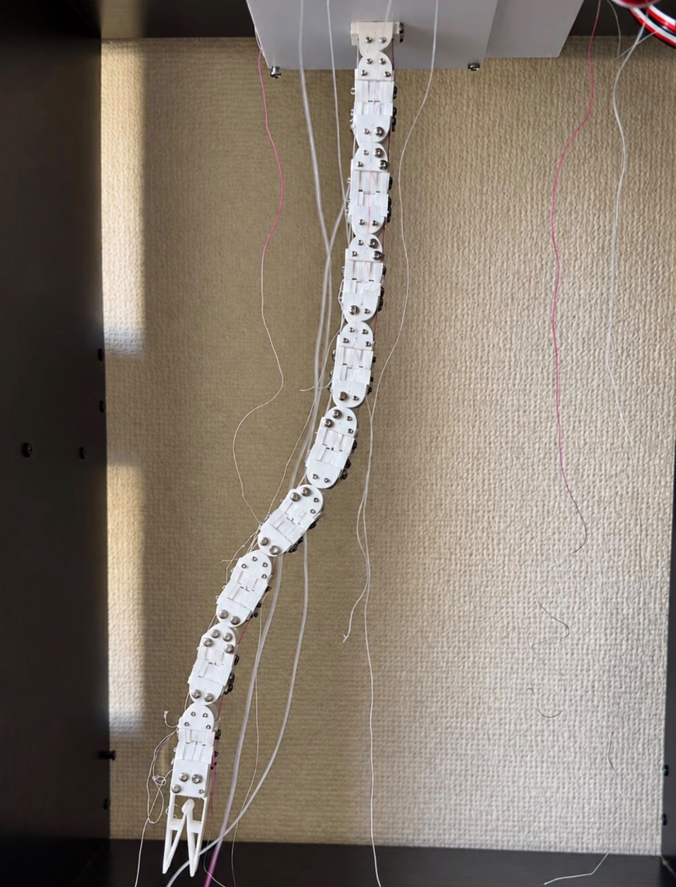
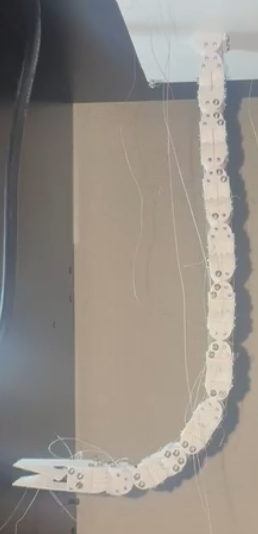
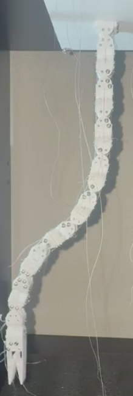
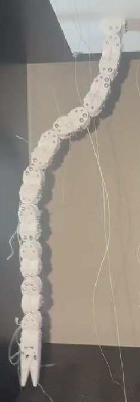

Compliant Mechanisms & Tendon Actuation
Tendon-Driven Continuum Robot
Built a continuum robot with alternating compliant joints and six pulling tendons for bending in two perpendicular planes.
OVERVIEW
Designed and built a compliant continuum robot with six pulling tendons and three bending DoF in each of two perpendicular planes.
Mechanical Design
Alternating compliant joints, passive segments, and tendon attachments enable bending in two perpendicular planes, with a compliant gripper for object manipulation.


Control & Motion Testing
Demonstrated needle pickup and insertion into a grape, alongside individual bending-DoF actuation to assess motion isolation and parasitic movement.


